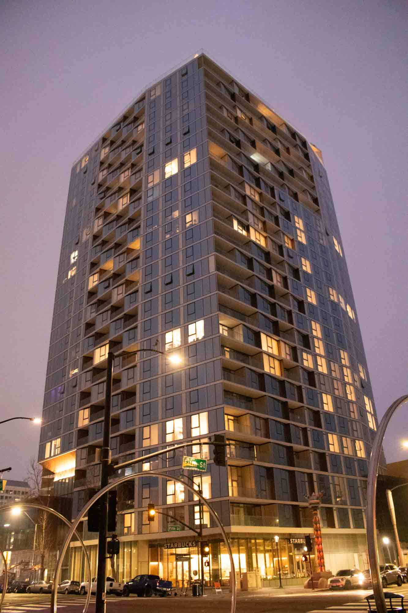
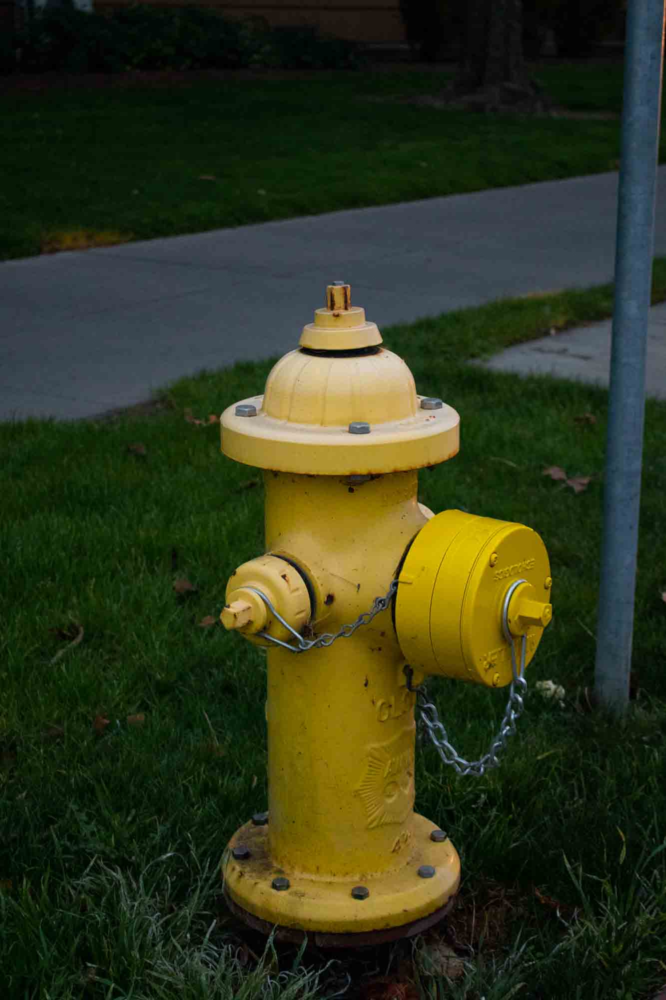
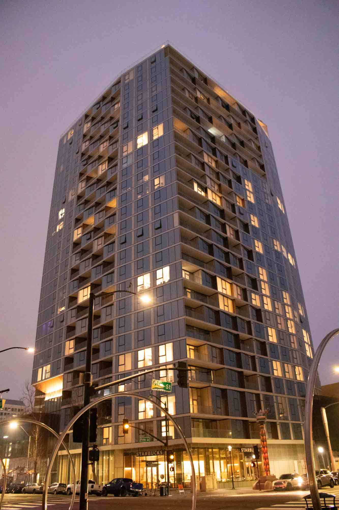
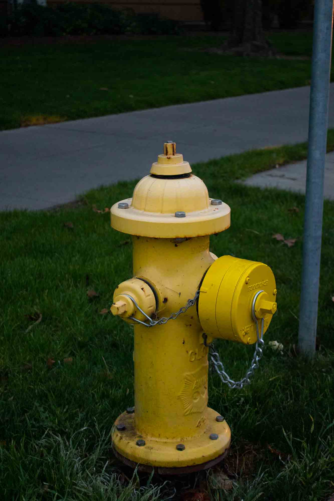

The Color of Light
2019, Photos


 



Photo 112: Color Photography | Exercise #1: The Color of Light
1-4: White Light (high noon)
5-8: Late Afternoon (or mid-morning)
9-12: Golden Hour (the last or first bit of sunlight, more like the Golden 10 minutes)
13-16: Artificial Light
17-20: Mixed-light (where two light sources mix to create a visible variation in the color temperature of a picture)
21-24: The Blue Hour